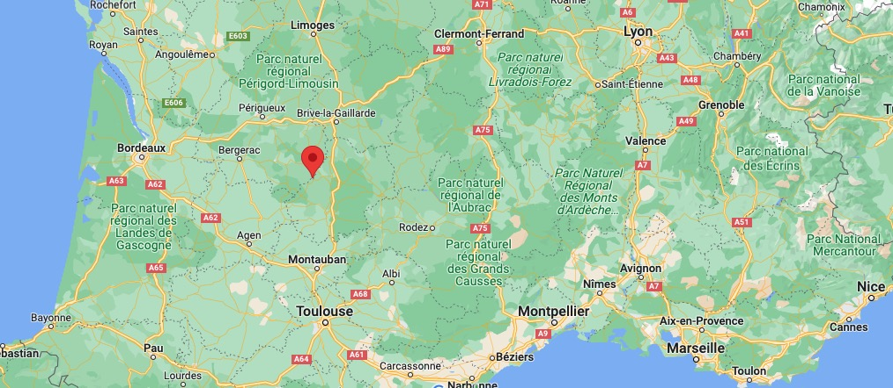

Copyright © 2023 De Franse Vriendin. Alle rechten voorbehouden.
De Franse Vriendin
Een uniek verblijf voor vrouwen in onze B&B Homestay waarbij ik, Marinka, er met je op uit trek.
Hi! Leuk dat je geïnteresseerd bent in een speciaal verblijf in de Franse Dordogne! Hier vind je meer informatie over:
- Het Franse vriendin concept
- Onze Bed & Breakfast
- Bezienswaardigheden en activiteiten
- Over ons persoonlijk
Wij, Maikel en Marinka, wonen in de prachtige Franse Dordogne. In glooiende heuvels waar rust, natuur en heel vaak een lekker zonnetje te vinden is. Er zijn volop wandelroutes langs boomgaarden en bossen, en op korte afstand vind je enkele van de mooiste plaatsjes van Frankrijk. Daarnaast zijn alle benodigde grote winkels te vinden op slechts 10 minuten rijden.
De Franse vriendin
Op onze fijne plek bied ik een verzorgd verblijf aan voor de alleenreizende vrouw. Samen met jou ga ik eropuit in de prachtige Dordogne regio! Het programma gaat geheel in overleg naar jouw wensen. Daarnaast verzorg ik de maaltijden en kijk ik, indien gewenst, met je mee naar bepaalde levensvragen. Met ruim 10 jaar werkervaring in de hulpverlening en als gediplomeerd NLP-coach bied ik een goed luisterend oor en weet ik jou veelal de juiste vragen te stellen om nieuwe inzichten te vergaren. Maar niets moet! en (bijna) alles mag.
Bed & Breakfast
Naast het Franse vriendin concept bieden wij ook standaard overnachtingen aan met alleen ontbijt. Voor iedereen die alleen of samen zelfstandig deze prachtige regio willen ontdekken.
Kijk rustig rond op de site en twijfel niet om een berichtje te sturen bij vragen.

Wie ben ik?
Ik ben Marinka Arentsen. Sinds maart 2005 ben ik gelukkig samen met Maikel, in dit grote avontuur, genaamd het leven! Want zo zien wij het leven. Als een reis vol bijzondere avonturen, leermomenten, persoonlijke groei en mooie ontmoetingen.
Mijn achtergrond
Tot januari 2019 hadden wij beide een vaste baan en een huis in Nederland. Marinka werkte in de hulpverlening als begeleider en heeft daarnaast haar NLP- en Life Coach diploma's.
Ik had een goede baan en fijn leven in Nederland, maar toch kriebelde er iets van binnen. Er zat een bepaalde onrust in mij. Tijdens onze vakanties maakten wij vaak veel (verre) reizen. Na ons afstuderen maakten wij zelfs een lange reis van 6 maanden door Afrika.
In 2018 besloten wij dan ook, mede veroorzaakt door bepaalde gebeurtenissen in ons leven, dat het tijd was voor een nieuw groot avontuur. Het was voor ons duidelijk dat het leven te waardevol is om je dromen niet te volgen. Om echt te gaan leven en niet geleefd te worden. Om voor dierbare herinneringen, ontmoetingen en groei te kiezen, in plaats van (valse) zekerheid en comfort.
Ons camperleven
Wij zetten ons huis te koop en kochten een camper om samen met onze hond Pep door Europa te gaan reizen. Het begin van de Happy Free Birds! In de daaropvolgende 2 jaar woonden en werkten wij in verschillende landen in Europa. We kwamen op de meest prachtige plekken en we ontmoetten zeer dierbare mensen.
De Franse Dordogne
Tijdens ons camperleven vielen wij voor de prachtige, pittoreske Dordogne streek. Met de schitterende natuur, de dorpjes en nog zo levendige geschiedenis die overal voelbaar is. Omdat wij altijd al de wens hadden om 'ooit' op het platteland te gaan wonen, in een rustige en natuurlijke omgeving, besloten wij daar te gaan huren. Te onderzoeken of wij hier wellicht zouden kunnen wonen. Ook mede door het hele 'Covid gebeuren' werd kamperen wat lastiger. Uiteindelijk huurden wij op en af zo'n jaar en begon de zoektocht naar een eigen huis in de streek.
De verhuizing
Na heel wat bezichtigingen, zijn wij sinds 2022 eigenaren van een hele fijne plek in Saint Aubin de Nabirat. Gelegen in de meest geliefde streek van de Dordogne, de Perigord Noir, op een mooie rustige plek. Ons Happy Free Birds team is ondertussen uitgebreid met een tweede fantastische hond, Scratch. En Marinka's moeder, Conny, is ook mee verhuisd naar Frankrijk. Zij woont in het aangrenzende appartement naast ons huis. Tot slot hebben wij sinds begin 2023 zes hele vrolijke, pluizige zijdehoenders op ons terrein. Deze kunnen heerlijk rondscharrelen in hun kippenbos en bezorgen ons verse scharreleitjes.
De Franse Vriendin
Het Franse vriendin concept
Zelf hebben wij wat van de dierbaarste reiservaringen vergaard, door bij mensen thuis te verblijven en met hen op pad te gaan in hun woonomgeving. Zo beleef je een streek toch op een heel andere manier en ontstaan er vaak mooie gesprekken en ervaringen.
Door deze persoonlijke ervaringen is ook het idee van 'De Franse vriendin' ontstaan. Marinka biedt met dit concept een unieke homestay ervaring aan:
Een uniek verblijf voor vrouwen in onze B&B Homestay waarbij ik, Marinka, er met je op uit trek.
Marinka
“Maar met wie trek je er dan op uit?” Woorden waarmee ik mezelf zou omschrijven zijn:
Een grote dier- en natuurliefhebber, intuïtief, gevoelig, bewust, openminded, sociaal, rustig, heeft een goed luisterend oor, observerend, puur en eerlijk, creatief, avontuurlijk, een levensgenieter.
Ik ben afgestudeerd als SPH'er en NLP- en life coach practitioner. Daarnaast schrijf ik graag poëzie, ben ik graag buiten op ons terrein of met de dieren bezig en doe ik aan yoga.
Voor wie?
Voor vrouwen die alleen naar Frankrijk komen, maar het leuk vinden om samen met iemand op te trekken. Om uitstapjes te maken, mooie gesprekken te voeren en samen te eten. Daarnaast kan Marinka, indien gewenst, ook vanuit haar coaching achtergrond met je meekijken bij bepaalde vraagstukken. Een uniek verblijf met vele mogelijkheden, maar geen moetjes.
Marinka verzorgt de maaltijden (hier sluit Maikel bij aan) en neemt jou persoonlijk mee op pad.
Een uniek concept voor de vrouw die:
- Single is, maar er graag met iemand anders op uit trekt.
- De vrouw die het regelen, verzorgen en uitzoeken even heerlijk aan iemand anders wil overlaten.
- De vrouw die rust, ontspanning en gezelligheid zoekt.
- De vrouw die op een keerpunt staat in haar leven en baat heeft bij een verblijf in een andere omgeving, met ander gezelschap.
- De vrouw die even ‘een break’ wil van alles, op een fijne plek. En wellicht samen wil filosoferen over bepaalde levensvragen.
- De vrouw die wellicht wil onderzoeken of de Franse Dordogne een mogelijke, nieuwe woonplek voor haar kan zijn.
- De vrouw die gewoon van binnen voelt dat ze heel enthousiast wordt van dit concept!
Activiteiten
Mogelijke activiteiten zijn:
- Wandelingen. “Ook gek op het buitenleven en de natuur?” Er zijn hier volop wandelroutes in de omgeving. Wanneer je het leuk vindt kunnen we de honden ook meenemen.
- Plaatsjes bezoeken. Er zijn meerdere van Frankrijks mooiste dorpjes in de omgeving. Denk bijvoorbeeld aan: Domme, La Roque Gageac, Sarlat. Deze en meer zijn allemaal te vinden op de lijst met Frankrijks mooiste dorpjes; Les plus beaux villages de France.
- Het bezoeken van prachtige tuinen.
- Het bezoeken van kastelen of grotten. Het barst hier van de historische plekken! Dit wordt ook wel de streek van 1001 kastelen genoemd. En daarnaast zijn hier vele bijzondere grotten waar zelfs de Neanderthalers al woonden.
- Een kano tocht en/of duik in de Dordogne rivier.
- Bezoeken van markten en brocantes.
- Ga met Marinka en Maikel mee naar een yogales in het naastgelegen dorp. Geen zorgen, er wordt ook Engels gesproken.
- Een bezoek aan Rocamadour. De één na grootste pelgrimsplaats in Frankrijk met de zwarte Madonna.
- En meer...
Er is van alles te zien en te beleven in de omgeving, maar het is maar net waar de behoefte ligt. Een dag (of meer) relaxen in de tuin met een boek en het eten laten verzorgen kan ook al heel fijn zijn.
Heb je daarnaast zelf iets gezien of gelezen wat je graag wilt ontdekken in de Dordogne? Geef dit dan ook rustig aan. Ik ben voor van alles in!
P.S. Sommige activiteiten zijn seizoensgebonden. In de winter sluiten bepaalde attracties en zijn kanotrips bijvoorbeeld niet mogelijk.
Eten
Tijdens dit verblijf mag je met ons mee eten. Wij eten zelf hoofdzakelijk vegetarisch/groenten gerechten. Vooraf kan er met je afgestemd worden wat wel of niet wenselijk is. Wanneer je graag vis of vlees eet, dan is dit ook mogelijk. Als we op pad zijn en bijvoorbeeld 's middags buiten de deur lunchen, dan betalen we beide ons eigen deel.
Voel je tijdens je verblijf de behoefte om even alleen te willen eten, geef het gerust aan! Je eten kan ook in de B&B kamer of op het terras geserveerd worden. Nogmaals; geen moetjes, maar gewoon verschillende mogelijkheden.
Tarieven
Voor het Franse vriendin concept kan tussen de 3 en 14 dagen geboekt worden. Bij de prijs inbegrepen zijn:
- Overnachtingen in de ruime en-suite slaapkamer
- Handdoeken en beddengoed
- Alle maaltijden bij ons thuis
- Vrij gebruik van de tuin en ons terrein
- Mijn tijd en energie, de schoonmaakkosten etc.
Wanneer we samen op pad gaan zullen we de benzinekosten delen en betalen we ieder ons eigen entree geld of het eten en drankjes buiten de deur.
- Laagseizoen 110,- per dag
- Juli & Augustus 145,- per dag
P.S. Wensen van gasten verschillen wat betreft exclusiviteit van excursies en etentjes buiten de deur. We betalen ieder ons deel met een maximaal bedrag van 50,- per dag voor mij.
Vervoer van en naar Bergerac airport
Indien je niet met eigen vervoer komt kan ik je ophalen (en wegbrengen) bij het vliegveld in Bergerac (tegen bijbetaling). Wij wonen op een kleine 1,5 uur vanaf vliegveld Bergerac.
Voorwaarden
Ik ben niet zo van de regeltjes, maar ga uit van ieders eigen gezonde verstand. Verblijf en activiteiten zijn allen op eigen risico. Zowel jij als ik, zorgen beiden voor onze eigen verzekeringen. Ik ben erg avontuurlijk, maar niet onverantwoord. Ik houd van gezelligheid én van rust, van open- en eerlijkheid. Geef zelf aan wat je wel/niet wilt, maar bijvoorbeeld ook hoe je qua energie zit. Ik geloof in het aangeven van grenzen, zodat je je daarbinnen juist vrij durft te bewegen.
Lets meet!
Ik kijk uit naar meer mooie ontmoetingen! Ben je enthousiast geworden over dit concept? Of heb je wellicht vragen? Neem gerust contact met mij op!
Tip: Check ook de mogelijkheid Combinatie B&B en De Franse vriendin.
P.S. En neem vooral ook eens een kijkje op Instagram bij Happy Free Birds voor meer impressies van ons en onze stek.
Bed & Breakfast Homestay in de Dordogne
Onze woning
Wij hebben een voormalige walnotenboerderij. Vroeger werden in de schuren walnoten gedroogd en verwerkt voor de verkoop. Walnoten zijn één van de bekendste streekproducten uit de Perigord Noir. De vele walnotengaarden zijn ook niet te missen wanneer je een roadtrip maakt in de omgeving.
De B&B kamer
Op de begane grond in ons huis bieden wij een sfeervolle, ruime kamer met eigen badkamer aan. Geschikt voor 2 personen. De kamer heeft een eigen entree op ons zuider terras. Hier vind je ook een buitenzitje. In de kamer staan comfortabele boxsprings die (indien gewenst) ook uit elkaar gezet kunnen worden. De kamer beschikt over een badkamer met douche, wastafel en toilet. Daarnaast vind je er een kleine koffie/thee corner, een zitje en werk- en/of eettafel.Tot slot heeft deze kamer een uniek poëtisch tintje. Meerdere van Marinka’s gedichten zijn hier terug te vinden.
Homestay
“Wat blijf jij je vooral herinneren van bepaalde reizen?” Voor ons zijn dit vaak ontmoetingen met mooie, bijzondere mensen.
Daarom hebben wij gekozen om een homestay ervaring aan te bieden. Dit houdt in dat je bij ons in huis verblijft. Wij vinden het leuk om andere mensen te ontmoeten, een praatje te maken en ervaringen te delen. Je bent vrij om onze keuken met ons te delen, evenals de grote achtertuin. In de warmere periodes bieden de bomen daar ook heerlijk schaduw. Wij hebben 2 enthousiaste honden, Pep en Scratch. Deze zullen zichzelf in huis, of in de tuin, ook graag aan je voorstellen. Wie je ook in de tuin kunt tegenkomen is Conny. Conny is Marinka’s moeder. Zij woont in het appartement op hetzelfde terrein. Conny kan je, indien je het leuk vindt, ook van alles vertellen over de eetbare kruiden, planten, groenten en fruit op ons terrein.
Ontbijt
Wanneer je een verblijf bij ons boekt, dan is het ontbijt inclusief. Broodjes met Franse kaasjes, zelfgemaakte jam, een gekookt eitje, of liever yoghurt met muesli en vers fruit? We overleggen met je wat je lekker vindt. Zo zorgen we voor tevreden gasten en gaan we bewust om met voedsel. Zo min mogelijk voedselverspilling. Wij verbouwen ook het één en ander (biologisch) op ons terrein. Dit hopen wij steeds meer uit te gaan breiden in de toekomst. Een divers voedselbos is waar wij geleidelijk aan naartoe werken.
Tarieven
- Laagseizoen 70,- per dag
- Juli & Augustus 90,- per dag
Combinatie standaard B&B verblijf en Franse vriendin concept
Het is ook mogelijk om het Franse vriendin concept te combineren met een standaard B&B verblijf. In overleg sta ik voor verschillende variaties open. Wellicht handig om de verschillen van een standaard B&B verblijf en het Franse vriendin concept nog even weer te geven. Hier komen ze;
Standaard B&B verblijf:
- Overnachting inclusief ontbijt
- Vrij gebruik van onze keuken, voorterras en grote achtertuin
Franse vriendin concept:
- Overnachting inclusief ontbijt
- Lunch en avondeten mag je mee eten met Maikel en mij. Ik verzorgt de maaltijden. Wil je even 'alleen tijd' dan kan het eten ook op je kamer of terras verzorgd worden.
- Naar wens gaat Marinka met je op pad voor bezienswaardigheden, wandelingen, activiteiten. (De kosten voor benzine, entree geld, eten buiten de deur etc. wordt verdeeld, zie 'Het Franse Vriendin concept').
- Ik neem alle tijd en energie voor jou om je een hele fijne en gezellige tijd te bezorgen. Een 'thuis' ver van huis aan te bieden, een maatje, luisterend oor en mede avonturier.
- Tegen bijbetaling haal en breng ik je van en naar het vliegveld van Bergerac, zodat je niet met eigen vervoer hoeft te komen.
B&B verblijf in combinatie met Franse Vriendin concept
De prijzen voor een Franse vriendin verblijf vind je hier.
- Laagseizoen 60,- per dag
- Juli & Augustus 80,- per dag

-
Er is dan ook volop keuze wanneer je kastelen wilt bezoeken. Enkele bekende kastelen in onze buurt die geopend zijn voor publiek:
- Chateau Milandes. Oude verblijf van Josephine Baker. Op 23 kilometer van hier.
- Chateau Beynac, 20 kilometer.
- Chateau Castelnaud, 18 kilometer.
- Chateau Fenelon, 18 kilometer.
- Chateau de Puymartin, 30 kilometer.
- Chateau Commarque, 38 kilometer.
- En nog velen meer…
Chateau de Montfort, 18 kilometer. Het kasteel zelf is niet te bezoeken, maar het is wel een mooie plek om even rond te lopen. Ook te combineren met een leuke wandeling langs de Dordogne rivier.


- Salut !
Contact
Je kunt me bereiken via onderstaand nummer (ook WhatsApp) en e-mail. Stuur me gerust je vragen door in een berichtje! Vergeet niet je nummer door te geven als je wilt dat ik je even terugbel.
Wil je boeken? Stuur me een bericht voor de beschikbaarheid.
